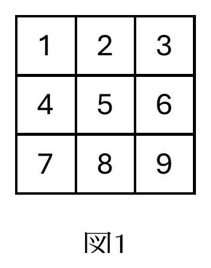
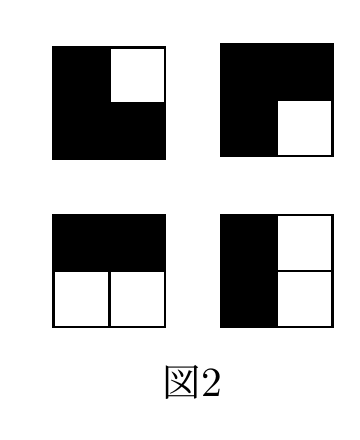

7月26日（金）3限｜大問3
認証されたユーザだけが参加でき、画面共有・書き込み共有・チャット共有ができる遠隔会議システムを考える。
操作データは参加者間で直接送受信されるのではなく、一旦Aに送られ他の参加者へ転送される。各参加者はBにあたる。通信先をCで特定するが、Aの中で複数のアプリケーションが動作している場合もあるので、どのアプリケーション宛かをDで指定する。（語群：DNS・IPアドレス・クライアント・サーバ・ネットワークアドレス・ポート番号）
各参加者のPC同士が直接つながるP2P型ではなく、中継役を置くクライアント・サーバ型の構成である。A=サーバ／B=クライアント／C=IPアドレス（宛先ホストの特定）／D=ポート番号（同じホスト内の複数アプリの区別）。
DNS：ホスト名・ドメイン名をIPアドレスなどへ対応づける仕組み。／IPアドレス：IPネットワーク上の通信先ホストを識別する数値。／クライアント：サーバへ処理や資源を要求する側。／サーバ：要求を受け、処理や資源を提供する側。／ネットワークアドレス：IPアドレスのうち所属ネットワークを表す部分で、個々の通信先全体を示すIPアドレスとは役割が異なる。／ポート番号：同じホスト上のどのアプリケーション宛かを区別する番号。
ユーザはEとFのペアを生成しFを公開する。メッセージは受信者のFで暗号化されEで復号される。ユーザはまずFを接続先に保存する。接続の際、ユーザはEを用いてGを生成し送信する。接続先はFを用いてGを検証することで認証を行う。（語群：PKI・共通鍵・公開鍵・指紋・ディジタル署名・秘密鍵・ファイアウォール）
E=秘密鍵／F=公開鍵（生成・公開の順、暗号化は公開鍵Fで・復号は秘密鍵Eで、という記述と整合）。認証時は秘密鍵Eで何かにG=ディジタル署名を行い、相手は保存済みの公開鍵Fでその署名を検証する——「秘密鍵でしか作れない署名を、公開鍵で誰でも検証できる」という、公開鍵暗号を使った本人確認（チャレンジ・レスポンス認証）の典型例。
PKI：認証局と電子証明書により公開鍵の正当性を保証する基盤。／共通鍵：暗号化と復号に同じ秘密鍵を用いる方式、またはその鍵。／公開鍵：鍵ペアのうち公開し、暗号化や署名検証に用いる鍵。／指紋：公開鍵やデータをハッシュして得る短い識別値。／ディジタル署名：秘密鍵で生成し公開鍵で検証することで、作成者と改ざんの有無を確認する仕組み。／秘密鍵：所有者だけが保持し、復号や署名生成に使う鍵。／ファイアウォール：規則に基づいてネットワーク通信を許可・遮断する仕組み。
1秒間にF回、ポインタ座標（横W以下・縦H以下の正整数）と線の色（C種類のうち1色）を送信する。1秒あたり何ビット送信することになるか。
W通りの横座標を区別する最小ビット数は、$2^k\ge W$を満たす最小の整数$k=\lceil\log_2 W\rceil$。同様に縦座標は$\lceil\log_2 H\rceil$ビット、C色の識別は$\lceil\log_2 C\rceil$ビット必要である。1回の操作データはこの3項の和で、毎秒F回送るためF倍する。プロトコルのヘッダ等を数えないという問題のモデルでは：
(1) Fを半分にする、(2) W・Hを半分にして送る（描画時に2倍する）。それぞれの通信量削減で、表示される線にどのような差異が生じるか。
(1) Fを半分（時間方向の間引き）：単位時間あたりの送信回数が減るため、点と点の間の間隔（時間的にも移動距離的にも）が広がる。ポインタをゆっくり動かす分にはほぼ違いが出ないが、素早く動かして急に曲がるような動きをした場合、本来のカーブが再現されず、実際より角張った・直線的な軌跡として表示されてしまう。
(2) W・Hを半分（空間方向の間引き）：座標が2の倍数の位置にしか丸められなくなるため、位置の分解能が粗くなる。小さくゆっくりとした動きや、細かい位置合わせを伴う動きをした場合、1ピクセル単位の移動が送信されず無視されたり、斜めの線が実際よりカクカクした階段状に表示されたりする。
(1)は「時間軸の粗さ」が速い動きのカーブを崩し、(2)は「空間軸の粗さ」が細かく精密な動き・斜め線を崩す、という点で影響の現れ方が異なる。
チャットメッセージの送受信データ量を減らすには、符号化方式としてどのような工夫が考えられるか。
過去のチャットから各文字の出現頻度を求め、頻出文字に短いビット列、まれな文字に長いビット列を割り当てる可変長符号を使う。例えばハフマン符号なら、どの符号語も別の符号語の接頭辞にならないため、区切り記号なしで一意に復号でき、頻度が偏っているほど固定長符号より平均符号長を短くできる。送受信側で同じ符号表を共有する必要があり、符号表自体の送信量も含めて有利かを判断する。
通信の中継方式には大きく2つの型がある。クライアント・サーバ型は中央のサーバが全参加者からのデータを集約・転送するため管理しやすい反面、サーバに負荷が集中する。P2P型（Winnyなど）は参加者同士が直接データをやり取りするためサーバ負荷は小さいが、匿名性が高くなり著作権侵害等の温床にもなりやすい（共通問題2023・2025のWinnyの出題と関連）。認証においては「公開鍵で暗号化して秘密鍵で復号（機密性）」と「秘密鍵で署名して公開鍵で検証（認証）」の2つの使い方の違いを区別できることが重要。
縦横N画素・合計N²画素のディスプレイを長さN²の配列dispで管理する（1=黒,0=白、添字は1始まり、横書きの文のように左上→右上→…→右下の順に対応）。図1はN=3の場合の配列添字(1,2,…,9)に対応する画素位置を示した図である。

問3から問5については、以下の選択肢から選んで答えよ。各選択肢は複数回使ってよい。
(ア) a (イ) b (ウ) c (エ) δ (オ) i (カ) a+b (キ) a−b (ク) b−a (ケ) dispi (コ) dispj (サ) dispi+1 (シ) dispj+1 (ス) i−1 (セ) i+1 (ソ) j−1 (タ) j+1 (チ) i−N (ツ) i+N (テ) j+N (ト) m−1 (ナ) m+1 (ニ) 2NL (ヌ) N² (ネ) N²−1 (ノ) N²+1
N=5として、配列 1111110000111110000111111 が表示する内容をアラビア数字1文字で答えよ。
5個ずつ5行に区切ると：
1行目・3行目・5行目が全黒（横棒3本）、2行目は左端のみ黒（上部の縦棒が左）、4行目は右端のみ黒（下部の縦棒が右）——これは7セグメント表示でいう「上・左上・中央・右下・下」の5画をなぞった形であり、数字の5そのものである。
N=2のディスプレイに、図2に挙げた4つの模様のいずれかが等確率で表示されるとする。この状況において「配列dispのi番目の要素が1である」というメッセージの情報量は何ビットか、$i$が1、2、3、4である場合それぞれについて数値で答えよ。但し$\log_2 3=1.6$であるとする。

図2の4通りを添字順$(\mathrm{disp}_1,\mathrm{disp}_2,\mathrm{disp}_3,\mathrm{disp}_4)$（1=黒,0=白）で書き出すと、$(1,0,1,1)$・$(1,1,1,0)$・$(1,1,0,0)$・$(1,0,1,0)$の4通りである（3黒1白の模様は2通りだけで、残り2通りは2黒2白であることに注意）。各iについて、この4通りのうちdispi=1となるものの個数を数えると：
情報量は$-\log_2 P(\mathrm{disp}_i=1)$で求まる：
4通りの模様は一見「対称」に見えるが、実際には左上（位置1）が全パターン共通で黒、右下（位置4）は1パターンでしか黒にならないなど、位置ごとに黒である事前確率が異なるため、情報量も位置ごとに異なる値になる。
i ← 1 m ← 0 while i ≤ 31 do if 0 < dispi then m ← 32 i ← 33 done return m
画面は縦N×横Nなので、配列dispの要素数はN²。したがってループ上限31はN²になる。各反復でdispi=1なら黒画素を1個見つけたので、個数mをm+1（32）へ更新する。黒白にかかわらず次の画素へ進むため、添字iはi+1（33）へ更新する。これで1番からN²番までをちょうど1回ずつ走査し、終了時のmが黒画素総数になる。
i ← N² while 0 < i do if N < i then j ← 41 dispi ← 42 else dispi ← 0 endif i ← 43 done
下方向に1画素ずらすには、位置iの新しい値を「N個上（1行上）」にあった元の値でコピーすればよい：$\mathrm{disp}_i \leftarrow \mathrm{disp}_{i-N}$。ただしi≤Nの最上段は上に画素がないので0（白）で埋める。
添字をN²から1へ減らしながら処理するのがポイント：先に大きいiから処理すれば、$\mathrm{disp}_{i-N}$（まだ書き換えていない元の値）を安全に読み出せる。もし逆順（1→N²）に処理すると、参照するはずの上の行がすでに書き換え済みになってしまい正しく動かない。
1画素の辺の長さをLとして、対角線の長さ$\sqrt{2N^2L^2}$を精度δで求める：
a ← 0 b ← 2N²L² while 51 > δ do c ← (a+b)/2 if 2N²L² < c² then 52 ← c else 53 ← c done return a
a,bで答え（対角線の長さ）を挟み込みながら半分ずつ範囲を狭める二分探索。区間の幅$b-a$がδ以下になるまで繰り返す。cが大きすぎれば（$c^2$が目標$2N^2L^2$を超えれば）上限bをcに更新し、そうでなければ下限aをcに更新する。
2次元的な画素配置を1次元配列で表すとき、「横書きの文のように並べる」規則（row-major）では、位置$(row, col)$（1始まり、$1\le row,col\le N$）は添字 $i=(row-1)N+col$ に対応する。逆に添字$i$から「1行上」に対応する添字を求めると単純に$i-N$になる——これが問4の核心。二分法（問5）は「範囲を半分に絞り込む」という発想が問3(共通問題2022)の平方根探索などとも共通する、頻出のアルゴリズムパターンである。
マウスなどのポインティングデバイスを用いて画面上のポインタをアイコンなどの目標物まで移動させる際に要する所要時間 \(T\) を求めるモデルとして、以下のフィッツの法則が知られている。ここで、\(D\) はポインタの始点位置から目標物の中心までの距離を、\(W\) は目標物の幅（大きさ）を表すものとする。以下の (1) から (3) に答えよ。
(1) この式から所要時間 \(T\) についてどのようなことが言えるのか、3行以内で答えよ。
目標までの距離Dが大きいほど、また目標の幅（大きさ）Wが小さいほど、ポインタを目標に合わせるのにかかる時間Tは長くなる。しかもその増え方は$D/W$そのものに比例するのではなく、対数的（$\log_2$）に緩やかに増加する。
(2) \(a\) と \(b\) はどのような定数か、合わせて4行以内で答えよ。また、\(a\) と \(b\) の値が小さいことは何を意味しているのか、合わせて2行以内で説明せよ。
aは、動作の開始・終了に要する準備時間など、移動の難易度（D,W）によらない基本的なオフセット時間を表す定数。bは、難易度（$\log_2(D/W+1)$、これを「難易度指数」と呼ぶ）が1単位増えるごとに所要時間がどれだけ増えるかという感度を表す定数で、どちらもポインティングデバイスや操作者の熟練度に依存する。a,bがともに小さいことは、基本準備時間が短く、かつ距離や目標の大きさが変わっても所要時間があまり増えない、つまりそのデバイス・操作方法が高性能（速く正確に操作できる）であることを意味する。
(3) この式の近似式を、人が目標物まで手を動かす動作の分析から導くことを考える。このとき、以下の「あ」から「え」に当てはまる式を答えよ。
いま、手から距離 \(D\) の位置（手の届く範囲内にあるとする）に、直径 \(W\) の円形の目標物の中心があるとする。手を素早くかつ円滑に動かして、しかし動かし過ぎることなく、人差し指で円形の目標物に触れるには、目標物にある程度近づくまでは手を素早く動かし、目標物に近づくにしたがって手を減速させるのが良さそうである。
そのために、まず目標物の手前に仮の目標地点を定めて、そこまで手を高速に動かす。仮の目標地点に手が到達したら、残りの距離を見て、再び目標物の手前に次の仮の目標地点を定めて、そこまで手を動かす。以上の動作を、人差し指が目標物に触れる（目標物の直径内に到達する）まで何度か繰り返す。
この際、手を動かすという1サイクルの動作にかかる時間は、目標物までの距離によらず一定だと仮定する（これにより、手は目標物に近づくにつれて減速することになる）。また、仮の目標地点を、目標物の中心までの直線上の中点に定めると仮定する。
この2つの仮定を置くと、\(k\) サイクル後の人差し指から目標物までの距離（つまり、目標物までの残りの距離）は あ となる。したがって、人差し指が目標物に触れる（目標物の直径の縁に到達する）のに必要なサイクル数 \(N\) は い を満たす。両辺の対数（底は2）をとって整理すると \(N=\)う が得られる。手を動かすという1サイクルの動作にかかる時間を \(t\) 秒とすれば、目標物に触れるまでの所要時間 \(T\) は え となり、フィッツの法則に近い形の式が得られることになる。
目標中心までの距離は1サイクルごとに半分になるので、$k$サイクル後の残り距離は
目標（直径W）の縁に触れる＝中心までの距離が半径W/2以下になる、が条件：
両辺を$W/2$で割って$2^N\ge 2D/W$、底2の対数をとると：
1サイクルの時間$t$として$T=Nt$：
形として$T=a+b\log_2(D/W+1)$と完全には一致しない（対数の中身に「+1」が入るか外に出るかの違い）が、$D/W$が大きいときはどちらも$\log_2(D/W)$にほぼ比例する、という同じ性質を持ち、「フィッツの法則に近い形」になっていることが確認できる。
(1) 人々がスマートフォンやパソコンで入力する住所、氏名、職業、家族構成、学歴などの情報、ソーシャルメディアで書き込む内容や共有する画像、購買履歴、ウェブサイトのページ閲覧履歴、GPSの位置情報や移動履歴など、様々な情報が膨大なビッグデータとして収集され、しばしば何らかの用途のために管理や利用がなされている。このような状況において、プライバシーの保護が民主主義にとって重要となる理由を3行程度で述べよ。
プライバシーが保護されないと、政府や企業が個人の思想信条・行動傾向を把握し、その情報をもとに特定の意見を持つ人を萎縮させたり、投票行動・政治的立場を予測して誘導したりすることが可能になる。民主主義は市民が周囲の目を気にせず自由に意見を形成し表明できることを前提とするため、プライバシーの保護はこの自由な意思形成・表明を守るために不可欠である。
(2) 情報技術を駆使した最先端技術は、社会における責任の境界に影響を与えうる。自動運転はそのような技術のひとつである。自動運転レベルについて、アメリカ運輸省高速道路交通安全局（NHTSA）は、レベル0（ドライバーが完全に運転に責任をもち自動化なし）からレベル5（完全自動運転）までの基準を示した。レベル2まではドライバーが安全確認を継続しなければならないとされているが、その先のレベル3およびレベル4（加速・操舵・制動にわたってシステムが主体となって行う）の自動運転車による事故において生じうる責任境界について、人間のドライバーのみが運転を担うレベル0の場合と比べつつ4行程度で説明せよ。
その際、「責任の境界」として誰が責任を持ちうるかということと、新たに考慮されるべき事項に焦点を置くこと。
レベル0では運転操作の主体が常に人間のドライバーであるため、事故の責任は基本的にドライバー個人に帰属する。レベル3・4では加速・操舵・制動をシステムが担うため、事故発生時にはドライバーの操作ミスだけでなく、自動運転システムの設計・実装（メーカーやソフトウェア開発者）、およびシステムからドライバーへの運転引き継ぎ要求（テイクオーバー）のタイミングや伝達方法の適切性にも責任が及びうる。つまり責任の所在がドライバー個人からメーカー・開発者・保守事業者などへと分散し、単純な「運転者の過失」という単一の枠組みでは捉えきれなくなる。新たに考慮すべき事項として、システムの判断ログの記録・保存による事故原因の究明可能性や、制御移譲プロセスの設計の妥当性が挙げられる。